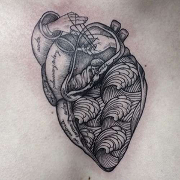
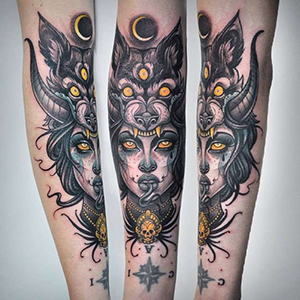
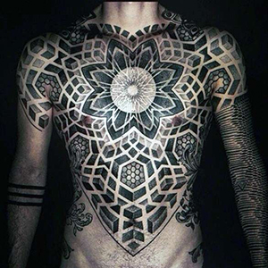
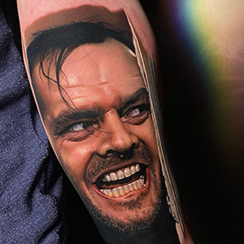
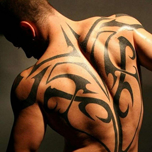
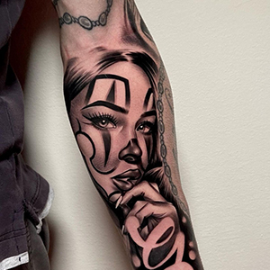
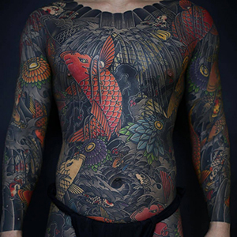

Welcome to the "Empress" Studio!
We are happy to welcome you to our page. Our studio is a unique space where each tattoo becomes a work of art. We strive to create an atmosphere where every client feels comfortable and confident.
What is a tattoo?
A tattoo is a design applied to the skin using special ink. This form of art can take various shapes, sizes, and styles, allowing each owner to express their individuality. Tattoos can carry deep personal meanings, reflecting significant moments in life, feelings, and beliefs.
There are many tattoo styles, from classic traditional to modern minimalist and watercolor. Each style has its characteristics and suits different personalities. Tattoos are also used as a means of self-expression—they can convey important messages, tell stories, and highlight the uniqueness of the owner.
It is important to note that creating a tattoo is not just about applying a design to the skin, but also about choosing the style, color, and sketch that will embody personal values and ideas. When choosing a tattoo, it is essential to consider not only its appearance but also the meaning it will have for you. Each tattoo is a part of your story that you decide to immortalize on your body.
Thus, tattoos are an integral part of the culture of self-expression and art, as well as an important element in the lives of many people, emphasizing their individuality and style.
Why do people get tattoos?
Creating a tattoo is not just a trendy statement, but also a way to stand out from the crowd. Here are some reasons to consider getting a tattoo:
- Self-expression: Each tattoo is a unique story that reflects your personality, passions, and beliefs.
- Aesthetics: Tattoos can be beautiful works of art that enhance your body.
- Symbolism: Many tattoos carry deep meanings and can serve as reminders of important events or people in your life.
- Confidence: Having a tattoo can boost your self-esteem and confidence, emphasizing your uniqueness.
Why choose us?
At our studio 'Empress,' we provide the highest level of service and safety. By entrusting us with your tattoo creation, you can be sure that you will receive:
- Professionalism: Our masters are experienced specialists who know all the nuances of tattooing. We use only high-quality materials and adhere to all sanitary standards.
- Individual approach: We understand that each tattoo is a personal story. We carefully listen to our clients' wishes and help bring their ideas to life.
- Diversity of styles: Our studio offers various tattoo styles—from traditional to modern. We can provide both minimalist designs and complex compositions.
- Cleanliness and safety: We pay special attention to hygiene and sterilization of tools to ensure the safety of each client.
Tattoo Styles:
Unusual and unexpected shapes that reflect the inner world of the artist.

Soft, flowing colors that create the effect of watercolor painting.

A style that combines elements of mechanical and biological forms.

Tattoos in black and grey tones, often featuring realistic images.

A style that uses black ink to create large and detailed patterns.

Created from many small dots forming patterns and images.

Clean lines and shapes that create unique patterns.

A technique for creating soft shadows and smooth transitions.

Tattoos resembling printed images, with detailed lines.

A style that uses bright colors and clear lines, often with pop-art elements.

Dark, mystical images, often using intricate fonts and symbols.

Tattoos created using only lines, without color filling.
The art of decorating letters and words in a unique style and font.

Simple and concise designs that emphasize essence without unnecessary details.

A modern interpretation of traditional style with bright colors and intricate elements.
Bright, fun, and eccentric tattoos featuring cartoon elements.

A classic style with bright colors and recognizable symbols like hearts and skulls.

Tattoos based on Eastern culture, often featuring dragons and koi fish.

Tattoos consisting of complex patterns and ornaments.
Detailed and lifelike images that look like photographs on skin.
A style resembling a sketch, often with rough lines and drawings.

Bright and saturated colors, often featuring elements of flora and fauna.

A style using black lines and geometric forms, inspired by tribal culture.
A combination of various styles, often with bright and eccentric elements.

Tattoos with thin lines and minimalist details.

Bright tattoos using a wide range of colors.

A style reflecting Mexican culture, often with elements of street art.
Bright and detailed tattoos often including elements of Japanese culture and mythology.
We invite you to explore our portfolio, where you can see the work of our masters.
Book an Appointment with Us!
Ready to take the step towards your new tattoo? Schedule an appointment with a master, and we will be happy to assist you! Your uniqueness deserves to be highlighted right here at the 'Empress' studio.
Contact Us!
Message or call us on WhatsApp: